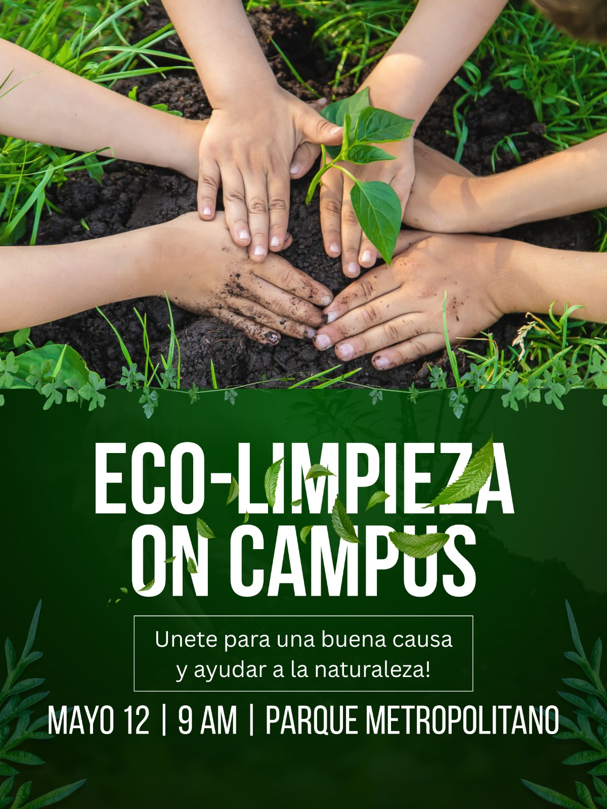

Voluntariado seleccionado Eco-limpieza en campus Puebla · Presencial · Servicio social válido · 25 lugares ★★★★★ 4.8 · 32 reseñas  Requisitos ¿Qué vas a hacer? Postularme Guardar para después Notas rápidas Resumen de reseñas